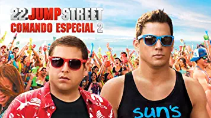
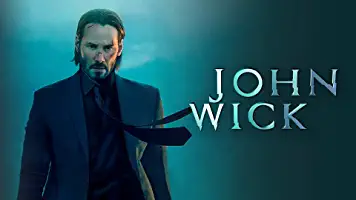
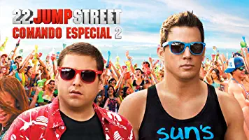
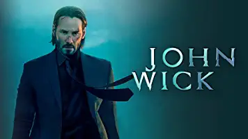

Título : El Hobbit: La Batalla de Los Cinco Ejercitos
Duración : 144 minutos
Género : Aventuras,Fantasía épica, Acción
Actores : Ian Mckellen, Martin Freeman, Evangeline Lilly
El director Peter Jackson culmina el ciclo de El hobbit con esta tercera parte que se centrará en el final de las aventuras del pequeño Bilbo Bolson y su regreso a Bolsón Cerrado, su hogar. Después de enfrentarse con el dragón Smaug y de obtener el famoso anillo de poder de las garras del siniestro Gollum, Thorin sacrifica su amistad y honor para protegerlo. Incapaz de ayudar a su amigo a entrar en razón, Bilbo se ve obligado a tomar una peligrosa decisión sin conocer aún los obstáculos que le esperan por delante. Sauron, "el señor oscuro", ha vuelto a la Tierra Media junto a legiones de orcos para atacar sigilosamente la Montaña Solitaria. A medida que la oscuridad crece, los enanos, elfos y hombres deben decidir entre juntarse para derrotar a un enemigo común o ser destruidos. Bilbo se encuentra luchando por su propia vida y la de sus compañeros.
Similares

 


